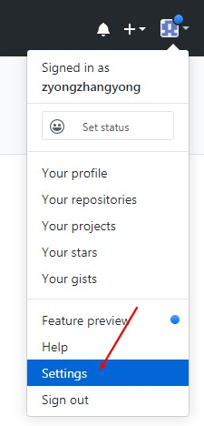
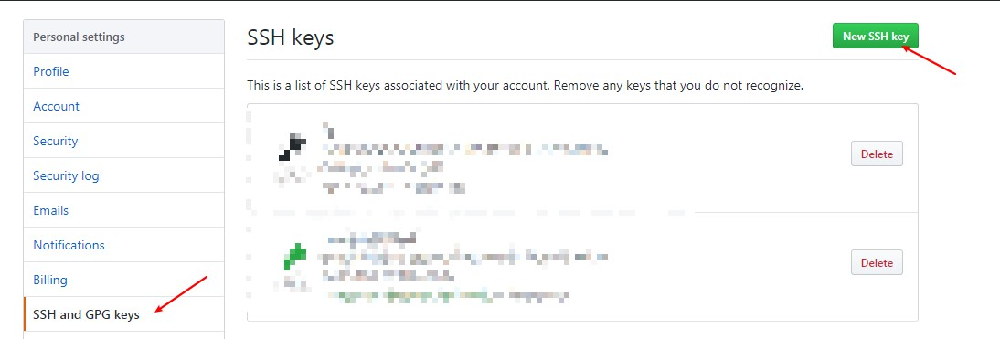
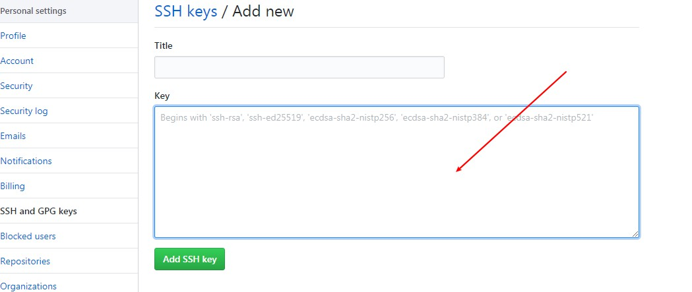
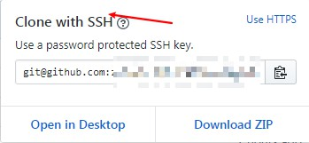
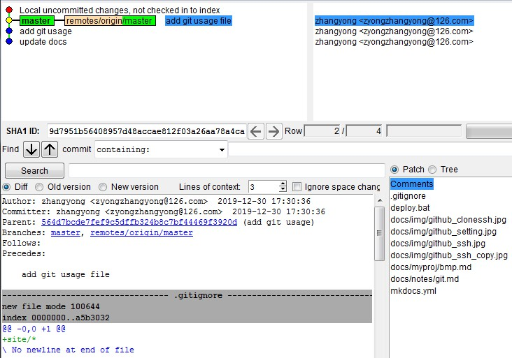

Base
- status
$ git status
On branch master
Your branch is up to date with 'origin/master'.
Changes not staged for commit:
(use "git add <file>..." to update what will be committed)
(use "git restore <file>..." to discard changes in working directory)
modified: docs/myproj/bmp.md
modified: mkdocs.yml
- add
$ git add docs/notes/git.md
$ git status
On branch master
Your branch is up to date with 'origin/master'.
Changes to be committed:
(use "git restore --staged <file>..." to unstage)
new file: docs/notes/git.md
- commit
$ git commit -m "add git usage"
[master 564d7bc] add git usage
1 file changed, 14 insertions(+)
create mode 100644 docs/notes/git.md
- push
$ git push
Enumerating objects: 8, done.
Counting objects: 100% (8/8), done.
Delta compression using up to 4 threads
Compressing objects: 100% (5/5), done.
Writing objects: 100% (5/5), 628 bytes | 628.00 KiB/s, done.
Total 5 (delta 2), reused 0 (delta 0)
remote: Resolving deltas: 100% (2/2), completed with 2 local objects.
To https://github.com/zyongzhangyong/mainpage.git
eaea8e7..564d7bc master -> master
Branch
- view
$ git branch
* master
- create
$ git branch test
Administrator@PC-20180827CUXX MINGW64 /e/git_rep/github/mainpage/mainpage (master)
$ git branch
* master
test
- switch
$ git branch
* master
test
Administrator@PC-20180827CUXX MINGW64 /e/git_rep/github/mainpage/mainpage (master)
$ git checkout test
Switched to branch 'test'
M docs/myproj/bmp.md
M docs/notes/git.md
M mkdocs.yml
Administrator@PC-20180827CUXX MINGW64 /e/git_rep/github/mainpage/mainpage (test)
$ git branch
master
* test
- del
$ git checkout master
Switched to branch 'master'
M docs/myproj/bmp.md
M docs/notes/git.md
M mkdocs.yml
Your branch is up to date with 'origin/master'.
$ git branch
* master
test
Administrator@PC-20180827CUXX MINGW64 /e/git_rep/github/mainpage/mainpage (master)
$ git branch -d test
Deleted branch test (was 564d7bc).
Administrator@PC-20180827CUXX MINGW64 /e/git_rep/github/mainpage/mainpage (master)
$ git branch
* master
Add ssh key
- create
ssh-keygen -t rsa -C "your_email@example.com"
- add pubkey to github
1.copy pulic key to clipboard
clip < ~/.ssh/id_rsa.pub
2.click setting

3.click New SSH key

4.copy string from clipboard and add 
- clone Repositories with ssh

Other
- view remote repository version
$ git remote -v
origin git@github.com:zyongzhangyong/mainpage.git (fetch)
origin git@github.com:zyongzhangyong/mainpage.git (push)
- ignore file
touch .gitignore
add ignore files or dir in .gitignore
site/*
*.log
- view log or diff
gitk
